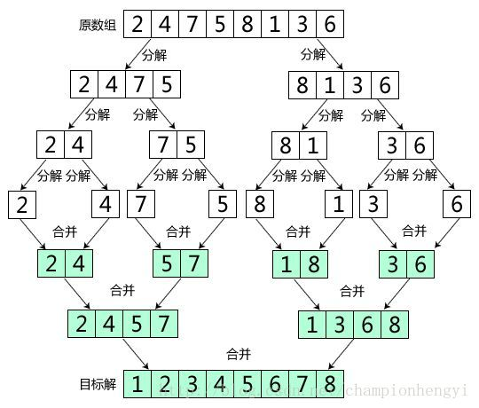
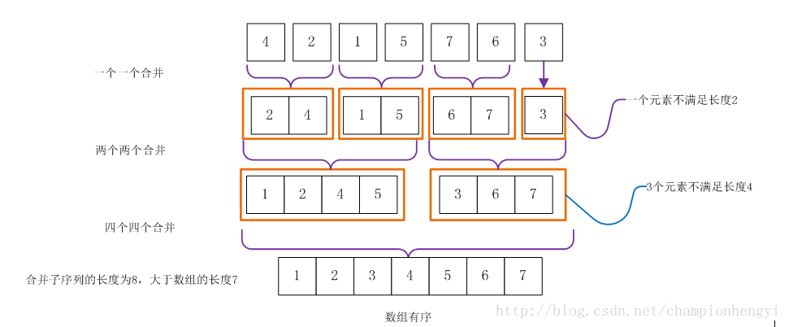

了解归并
归并排序算法和快速排序算法是java.util.Arrays中使用的排序算法。对于一般的基本数据类型，Arrays.sort函数使用双轴快速排序算法，而对于对象类型使用归并排序（准确的说使用的是TimSort排序算法，它是归并排序的优化版本）。这样做的原因有两点，第一个原因，归并排序是稳定的，而快速排序不是稳定的。第二个原因，对于基本数据类型，排序的稳定性意义不大，但对于复合数据类型（比如对象）排序的稳定性就能帮助我们保持排序结果的某些性质。
归并排序也是一种基于分治法的排序。它是将原始无序序列划分成两个子序列，然后分别对每个子序列递归的进行排序，最后再将有序子序列进行合并。
自顶向下归并排序
自顶向下主要使用递归的思想，要保证整体序列有序，我们就应该同时保证原数组的左子序与右子序同时有序，然后将两个子序进行合并，然而要保证左子序和右子序有序，我们就要保证左子序的左右子序有序，然后进行合并；右子序的左右子序有序，然后进行合并… ….处理这种重复的工作，我们需要的就是递归。
图解自顶向下归并排序：

算法思想
- 既然我们要拆分数组，我们需要一个中枢值，它就是原数组的中点或近似中点的地方；
- 我们需要一个辅助空间，它用来保存当前需要合并的左右子序；
- 从图解中我们可以很清楚的看到，我们刚开始不断地将原数组拆分，直到保证每个子数组都有序，很显然，这个子数组就是单个元素；
- 合并子数组，将辅助数组中合并后产生的新数组覆盖至原数组，我们需要对原数组进行刷新。
下面是自顶向下的实现代码：
1 |
|
效率分析
归并排序的时间主要花在了划分序列，子序列的排序过程以及合并过程，由于划分序列的时间为常数，对一个长度为n的记录序列进行归并排序，调用一趟归并排序的操作是调用n/2h次合并算法，时间复杂度为O(n)。整个归并排序需要进行logN趟归并操作，时间复杂度O(n) = NlogN。
空间复杂度：需要一个空间大小为N的辅助数组来存放待排序记录，空间杂度为O(n)。
最后，归并排序是稳定的。
自底向上归并排序
直接看图解吧：

可以看到在自顶向下归并排序中，我们先是对数组进行了不断的拆分，然后又合并，而在自底向上的归并中，我们不再对数组进行拆分，因为单个元素始终有序，所以我们只要刚开始控制子数组的长度为1，然后进行一一合并，合并后的子数组长度为2，那么我们就进行两两合并… …可以看到，自底向上的代码是比自顶向下的代码要好写的。
在这里我们需要注意的一点是数组按照归并长度划分，最后一个子数组可能不满足长度要求，这个情况需要特殊处理。自底向上一般使用循环：
1 |
|